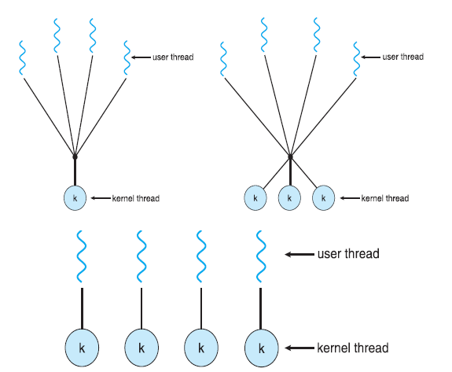
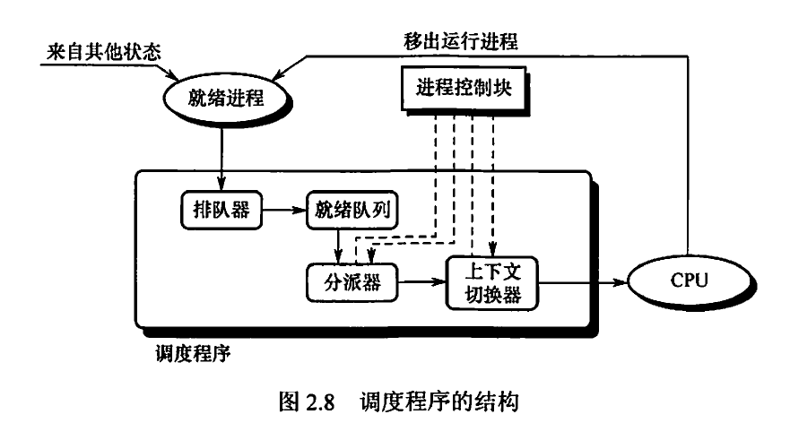

# 进程
# 进程的基本概念
进程 (process) 是进行中的程序的抽象。其设计是为了实现多个程序的并发执行，进而实现操作系统的并发和共享两个最基本的特征。
# 进程的组成
进程包括以下几个主要的部分：
- 代码段：保存进程需要执行的程序。
- 数据段：保存程序中全局变量的值。
- 代码库：进程执行所依赖的共享的代码库。
- 用户栈：保存各种临时变量的值。值得注意的是，栈的扩展方向是自顶向下的，即栈底固定在高地址不动，当栈开销变大时，栈顶向低地址方向移动。
- 用户堆：管理进程动态分配的内存，与栈相反，堆的扩展方向是自底向上，即堆顶位于高地址，堆开销变大时，堆顶向高地址移动。
- 内核部分：位于进程中地址空间的最顶端，包括内核中需要使用的代码和数据，以及内核内存等。进程控制块就位于这一部分。
# 进程控制块
为保证并发执行的每个程序都能独立运行，需要为进程配备独立的数据结构，称为进程控制块 (Process Control Block, PCB)。系统利用 PCB 实现对进程的控制和管理，PCB 也是进程存在的唯一标志。操作系统内的每个进程的相关信息，采用 PCB 进行存储。具体包括以下方面:
- 进程状态 (process state)
- 进程标识符 (process identification, PID) 和用户标识符 (user identification, UID)
- 程序计数器 (program counter, PC): 存放现行指令的地址。
- CPU 寄存器 (CPU register): 包括 CPU 的各种寄存器，如累加器、索引寄存器、堆栈指针等。其实程序计数器也可以归入其中。
- CPU 调度信息 (CPU-scheduling information): 包括进程优先级、调度队列的指针等参数。
- 内存管理信息 (memory-management information): 根据操作系统的内存系统确定，包括基地址和页表、段表等。
- 记账信息 (accounting information): 包括 CPU 使用时间、作业或进程数量等。
- I/O 状态信息 (I/O status information): 这类信息包括分配给进程的 I/O 设备列表、打开文件列表等。
# 上下文
进程的上下文 (context) 是用来跟踪进程的相关信息的数据结构，属于 PCB. 其包括的信息为进程运行时的寄存器状态，其能够用于保存和恢复一个进程在处理器上运行的状态。当进程中断后，其对应的寄存器内容等运行环境将被保存到内存中，当进程需要恢复运行时，操作系统调用内存中的内容恢复进程的运行环境。这样的技术称为上下文切换 (context switch)。上下文切换的流程如下：
- 挂起一个进程，保存 CPU 上下文，包括程序计数器和其他寄存器。
- 更新 PCB 信息。
- 把进程的 PCB 移入相应的队列，如就绪、在某事件上阻塞队列。
- 选择另一个进程执行，并更新其 PCB.
- 跳转到新进程的 PCB 中的程序计数器所指向的位置执行。
- 恢复处理器上下文。
# 进程的状态
进程的全部状态包括:
- 新建 (new): 表示一个进程刚刚被创建，但是还未进行初始化，不能被执行的状态。
- 就绪 (或预备，ready): 进程已经准备好运行，但由于某些原因未开始运行的状态。
- 执行 (running): 正在处理器上执行指令的状态。
- 阻塞 (blocked): 阻塞状态下，进程执行了某操作后，会等待某外部事件发生后再运行，即处于中断状态。例如程序发起 I/O 请求后会阻塞，直至 I/O 请求得到响应后退出阻塞状态继续运行。
- 终止 (terminated): 表示进程已经完成了执行，且不会被再次调度。
关于进程间各状态的转换，可以参考下图:

值得注意的是，进程可以从执行态转变为就绪态，只要进程的时间片达到或有更高优先级的进程抢占其资源。此外，在进程的所有状态转换中，只有执行态到阻塞态的转换是进程自身决定的。
# 进程 API 的设计
为运行进程，操作系统必须提供一定的进程 API，主要包括以下几个方面:
- 创建 (create): 创建新进程的方法。进程的创建是一个原语，称为创建原语。在 Linux 中采用
folk接口实现进程的创建。 - 销毁 (destroy): 强制销毁进程的方法。进程的销毁是一个原语，称为终止原语，在 Linux 中采用
exit或abort实现。 - 等待 (wait): 等待进程停止运行的方法。在 Linux 中采用
wait接口实现。 - 杂项控制 (miscellaneous): 对进程的其他控制方法，例如暂停 (中断) 进程和恢复进程，分别对应阻塞原语和唤醒原语。
- 状态 (status): 用于获取进程状态的方法。
# 进程的创建
进程的创建过程分为以下几个步骤：
- 为新进程分配一个唯一的进程标识号，并申请一个空白 PCB. 若 PCB 申请失败，则创建失败。
- 建立虚拟运行环境，包括为进程分配内存等资源、为进程创建线程和分配设备等。
- 初始化 PCB, 主要包括初始化标志信息、初始化处理机状态信息和初始化处理机控制信息，以及设置进程的优先级等。
# 进程间通信
进程间通信 (Inter-Process Communication, IPC) 是多进程协作的基础。其目标是通过操作系统共享进程间的数据资源，实现应用程序互联。进程的通信一般包括共享内存、消息传输和管道通信三种方式。
共享内存中可能出现争用问题，这时需要借助信号量解决。
# 线程
# 线程的基本概念
线程 (thread) 是程序执行流的最小单元，是比进程更轻量的运行时抽象。也可以说，线程是程序在虚拟 CPU 上的执行过程，或执行中的程序。
仅采用进程存在一些局限。例如：
- 进程的开销较大 (资源问题)
- 进程的隔离性过强 (独立性问题)
- 进程内部不能实现并行 (并发性问题)
于是，我们将进程细分出更小的结构 —— 线程。引入线程后，上述的三个问题可以得到解决。在资源问题上，进程是系统拥有资源的基本单位，而线程除自身必须的少量出资源外不占有系统资源。因此线程的开销较小。尽管线程不占有系统资源，但线程可以访问其所隶属的进程的系统资源，这就使得同一进程下的不同线程可以实现方便的资源共享。当引入线程后，程序执行的最小单位变为线程，因而可以实现线程调度，使得同一进程内部的不同线程可以实现并行。
# 线程控制块
线程控制块 (Thread Control Block, TCB) 是操作系统描述和管理线程的数据结构。其通常包括以下几部分：
- 线程标识符
- 一组寄存器，包括程序计数器、状态寄存器和通用寄存器；
- 线程运行状态，用于描述线程处于何种状态
- 优先级
- 线程专有存储区，在线程切换时保存现场
- 堆栈指针，用于过程调用时保存局部变量及返回地址等
# 线程的实现方式
线程的实现方式可以分为和用户级线程和内核级线程。此外，也可以在两种方式的基础上进行组合。
# 用户级线程
用户级线程 (user-level thread, ULT) 是指线程管理工作都由应用程序在用户空间内完成的线程。因此，即使将程序划分为多个用户级线程，内核也不能意识到多线程的存在。
其优点如下：
- 线程切换不需要转换到内核空间，节省了模式转换的开销。
- 线程内调度算法是专用的，不同进程可以根据自身需要，选择不同的调度算法。
- 用户级线程的实现和操作系统平台无关，对线程管理的代码是用户程序的一部分。
其缺点如下：
- 当进程执行系统调用而被阻塞时，整个进程内的所有线程都被阻塞。
- 不能发挥多处理机的优势，进程中每次只能有一个线程执行。
# 内核级线程
内核级线程 (kernel-level thread, KLT) 是指线程管理工作都在内核空间内实现的线程。
其优点如下：
- 能发挥多处理机的优势，同一程序的多个线程可以并行执行。若进程中的一个线程被阻塞，其余线程仍然可以执行。
- 内核支持线程具有很小的数据结构和堆栈，线程切换比较快、开销小。
- 内核本身也可以采用多线程技术，提高系统的执行速度和效率。
其缺点如下：
同一进程中的线程切换，需要从用户态转到内核态进行，系统开销较大。
# 多线程模型

# CPU 调度
# 调度基础
# 调度的概念
调度 (scheduling) 是操作系统实现资源分配的方式。
# 调度的分类
调度可以按照层次分类。对于一项作业，其往往要经历三级调度：
- 高级调度 (作业调度)：即从外存上处于后备队列中的作业中选取并建立相应进程的调度，其本质是内存和外存的调度，对于每个作业，只调入一次，调出一次。后面介绍的磁盘调度即为此层次的调度。
- 中级调度 (内存调度)：是在内存中进行的调度，其目的是提高内存利用率和系统吞吐量，一种主要的方式为将暂不运行的进程调至外存 (即挂起)。
- 低级调度 (进程调度)：是最基本、频率最高的调度，即按照某种方式将 CPU 分配给进程。
此外，调度还可以按是否发生抢占分类为抢占式调度 (preemptive scheduling) 和非抢占式调度 (nonpreemptive scheduling)。
# 调度的衡量指标
调度算法可以采用一些指标来衡量。以进程调度 (CPU 调度) 为例，其主要包括以下衡量指标：
- CPU 利用率：定义为 CPU 有效工作时间与 CPU 工作总时间的比值。其中 CPU 工作总时间是 CPU 有效工作时间和 CPU 空闲等待时间的和。
- 吞吐量：定义为单位时间内 CPU 完成作业的数量。
- 等待时间：即所有线程在就绪队列中等待的时间之和。
- 响应时间：定义为用户从提交请求到系统首次响应所耗费的时间。
- 周转时间：定义为从作业提交到作业完成所经历的时间。对于 个线程，其周转时间各自为 , 则常采用平均周转时间
来衡量。此外，如果还知道线程 的实际执行时间为 , 则还可以用平均带权周转时间
来衡量。
对于其余层次的调度，也可以将对象类比后得到近似的衡量指标。
# 调度器
调度器 (scheduler) 即调度程序，是 CPU 调度的软件基础。其通常包括下面三部分：
- 排队器
- 分派器
- 上下文切换器
其结构如下图：

# 调度算法
# 先来先服务 (FCFS)
# 短作业优先 (SJF)
# 优先级调度 (priority)
- 时间片轮转调度 (RR):
- 多级队列调度
- 多级反馈队列调度:
# 同步与互斥
# 基本概念
# 临界资源
不能被并发使用的资源称为临界资源 (critical resource)。
临界资源的访问一般分为四个部分：
- 进入区 (entry section)：为了进入临界区使用临界资源，在进入区要检查可否进入临界区，若能进入临
界区，则应设置正在访问临界区的标志，以阻止其他进程同时进入临界区。 - 临界区 (critical section)：进程中访问临界资源的那段代码，又称临界段。
- 退出区 (exit section)：将正在访问临界区的标志清除。
- 剩余区 (remainder section)：代码中的其余部分。
为禁止两个进程同时进入临界区，临界区访问应遵循以下准则：
- 空闲让进：临界区空闲时，可以允许一个请求进入临界区的进程立即进入临界区。
- 忙则等待：当已有进程进入临界区时，其他试图进入临界区的进程必须等待。
- 有限等待：对请求访问的进程，应保证能在有限时间内进入临界区。
- 让权等待：当进程不能进入临界区时，应立即释放处理器，防止进程忙等待。
# 同步
并发执行环境下，保持操作之间偏序关系的行为，称为同步 (synchronization)，又称直接制约关系。
# 互斥
并发执行环境下，两进程不能同时使用临界区资源的约束称为互斥 (mutual exclusion, mutex)，又称间接制约关系。当一个进程进入临界区使用临界资源时，另一个进程必须等待，当占用临界资源的进程退出临界区后，另一进程才允许去访问此临界资源。
# 同步机制的实现方法
# 基于硬件的方法
对于单处理器，一般采用中断屏蔽的方式实现。
# 基于软件的方案
Peterson 方法是最经典的互斥机制的软件方案之一。在该方法中， turn 变量表示当前进入临界区的进程， flag 表示当前进程是否希望进入临界区。代码如下：
设置公共变量 int turn = 0; Boolean flag[2];
对进程 0，其代码结构为：
do { | |
flag[0] = T; | |
turn = 1; | |
while(flag[1] && turn == 1) | |
; | |
// critical section | |
flag[0] = F; | |
// reminder section | |
} while (true); |
对进程 1，其代码结构为：
do { | |
flag[1] = T; | |
turn = 0; | |
while(flag[0] && turn == 0) | |
; | |
// critical section | |
flag[1] = F; | |
// reminder section | |
} while (true); |
由于现代计算机的基本指令有差别，不能确保 Peterson 方法仍能正确运行在这类机器上。
# 锁
锁 (lock) 是操作系统设计人员基于软件方法解决临界区问题而设计的应用程序。从操作系统的角度来看，由于
# 基本操作
锁的基本操作包括获取 (acquire) 和释放 (release) 两种。
acquire() { | |
while (!available) | |
; | |
available = false; | |
} | |
release() { | |
available = true; | |
} |
# 互斥锁
互斥锁 (mutex lock) 是最基本的锁工具。
# 自旋锁
# 信号量
# 死锁
# 死锁的概念
死锁 (deadlock) 是指在多道程序环境中，多单线程进程间相互竞争资源，导致任一进程所申请的资源都被其余等待进程占有，使得无外力情况下各进程均一直处于阻塞态无法运行的情形。
# 死锁产生的必要条件
死锁的产生有四个必要条件，这些条件也被称为死锁的特征 (deadlock characterization)。
- 互斥：请求资源的多个进程存在互斥。
- 保持等待 (请求并保持)：进程在等待时保持已占用的资源，等待获得申请的资源。
- 非抢占 (不剥夺)：进程不能抢占其它进程的资源。
- 循环等待：各进程形成一条或多条进程间等待的环路。
# 死锁处理策略
# 死锁的避免
破坏死锁产生的上述四个必要条件之一即可实现死锁的避免。
- 破坏保持等待条件，方法是采用预先静态分配的方式分配资源，缺点是会产生资源的严重浪费。
- 破坏循环等待条件：方法是采用顺序资源分配的方式分配资源，进程必须按照编号递增的顺序申请资源，且同类资源只能一次申请完。缺点是资源编号必须相对稳定，就限制了新类型设备的增加。此外，也可能造成一定程度的资源浪费。
# Reference
- GeekForGeeks
- Mutex vs Semaphore